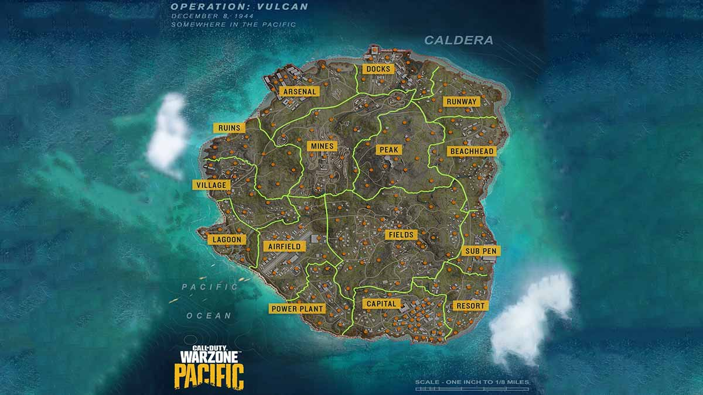

Midnight Ghost Hunt Releases on Early Access
A game I have been looking forward to trying myself, Midnight Ghost Hunt is a mix between Phasmophobia and Prop Hunt, and is the perfect game for groups of friends. With a capacity of up to 8 players in a game, it is perfect for those friend groups where having 4 player multiplayer games is too little. Each player has a side, one side is the hunters and the other are the hiders, with the capacity of four on each side. The game is simple the hiders, hide and the hunters, well they hunt. However, once the time hits a certain point, the tables turn and the hiders may now fight back, whilst the hunters continue to try and exorcise the ghosts now attacking them.
Whilst I have seen very little gameplay, what I have seen looks fun and I am looking forward to trying it out with my friends. And if this is something you think you might like check it out here on the steam store. However, it is currently £15.49 but it seems worth it.
Skyrim Gets Yet Another Release
After teasing Elder Scrolls 6 for the past ten years, Bethesda have re-released The Elder Scrolls V: Skyrim, yet again. It has been 10 years since the original release of the seemingly ever-lasting game, so they just had to release the anniversary edition of the game. With new features and enhanced graphics... oh who am I kidding, the game looks the same with slightly better graphics and what are these fabulous new features you speak of? Fishing. Yes, they added fishing, something that could be easily modded in, to the game and fans were not happy. Longtime, fans of the Elder Scrolls Series desperately want a new installment but it seems Bethesda are quite content with keeping everyone in the dark for now. With the overall succession of Skyrim, it's no surprise they keep re-releasing it, but surely there's only so much you can actually do with a ten year old game at this point?
Warzone gets a New Map
Fans of the Activison's Battle Royal game had been gifted with a new map. The Call Of Duty spin-off game introduced a new map, the Caldera, on the 9th of December 2021. Thus, leaving behind the classic Verdansk, which is no longer playable in the new season of Warzone. Many fans are loving the new map and new operators, and it makes a change to have a new map to play. With a new setting and many new locations, players can now hone their skills outside of the boring and repetetive constraints that Verdansk had. As I don't play Warzone myself, I am interested to know what many seasoned Warzone players think of the new change, wether they are willingly embracing it or if they wish for the old Verdansk map back. Maybe Warzone will run an event in the future, where players can revisit their old friend, Verdansk. See the caldera map below.
